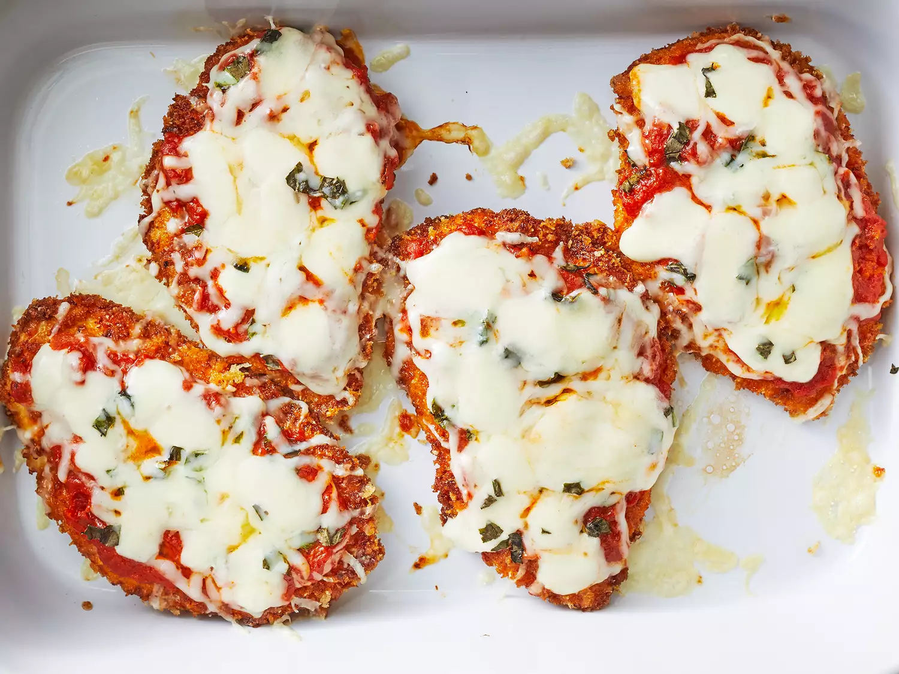

Angel Hair Chicken Garden Pasta

Savory, Chicken Garden Pasta
Odin Recipes Home
Ingredients
- 1 lb (0.45 kg) skinless, boneless chicken breast cubed into bite-sized pieces
- 1 box angel hair pasta
- 1 jar tomato pasta sauce
- 1 cup grape tomoatoes
- 1/2 cup scliced olives
- 1/4 cup capers
- 1/4 cup fresh chopped parsly
- 1 fresh chopped white or red onion
- 3-4 cloves of freshly chopped garlic, for cooking
- 2 tbsp olive oil, for cooking
- 1 cup shredded mozzarella cheese
Note: Double the olives and capers for a more gardeny taste!
Steps
- Heat the olive oil in a pan, and add the chopped garlic and 1/2 of the chopped onion
Saute for 2 minutes
- Add the cubed chicken and cook thoroughly
Chicken pieces should no longer have a pink center
Drain excess oil, or leave in for flavor
- Fill a large pot with water and bring to a boil
- Cook the pasta according to the box's directions, then drain the water
- Add pasta sauce, olives, capers, parsley and remaining onion to the noodles and stir it in
- Add chicken, garlic, and onion to the noodles
- Add desired amount of mozzarella cheese to pasta, or add to individual servings
- Serve and Enjoy!